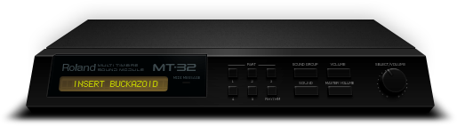

Karty dźwiękowe |
MENU |
| Strona główna |
| Próbkowanie |
| Synteza FM |
| Synteza WT |
| MIDI |
MIDI
Koncepcja cyfrowego złącza instrumentów muzycznych (MIDI), wprowadzona we wczesnych latach 80., zrewolucjonizowała rynek, przerastając z czasem oczekiwania swych twórców. MIDI pozwala na wymianę informacji i synchronizację sprzętu muzycznego za pomocą standardowych komunikatów, tworząc spójny system sterowania zestawem muzycznym. Komunikaty MIDI mogą być proste (np. włącz dźwięk pianina na 5 sekund), lub złożone (np. zwiększyć napięcie wzmacniacza VCA w generatorze 6, aby dopasować częstotliwość do generatora nr 1).
Należy tutaj pamiętać, że MIDI nie przesyła dźwięku, lecz informacje o nim (i nie tylko). Na przykład muzyk w czasie koncertu naciśnięciem klawisza może wydobyć nie tylko dźwięk, ale również może synchronicznie sterować błyskami światła, sekwenserami, modułami brzmieniowymi itp. – oczywiście pod warunkiem, że wymienione urządzenia będą zgodne ze standardem MIDI. Posiadając w komputerze kartę dźwiękową FM czy też WT, mamy, praktycznie rzecz biorąc, do czynienia z modułem brzmieniowym syntezatora muzycznego. Komunikację z owym modułem zapewnia port MIDI oraz programy zwane sekwencerami. Sekwencery umożliwiają też edycję zapisu cyfrowego MIDI w postaci standardowych plików (z rozszerzeniem MID).
Specyfikacja MIDI umożliwia sterowanie 16 urządzeniami MIDI jednocześnie. Sekwencer łączy funkcję magnetofonu wielościeżkowego i pulpitu mikserskiego. Poszczególne partie instrumentów nagrywa się na ścieżkach (może ich być 128 i więcej). Niezaprzeczalną zaletą MIDI jest oszczędność pamięci – skoro przesyłane są tylko dane dotyczące dźwięku, minuta muzyki wymaga zaledwie około 20 KB danych. MIDI ma pod tym względem ogromną przewagę nad cyfrową techniką zapisu dźwięku, przetworzonego przez konwertery analogowo-cyfrowe na twardym dysku.
Pierwszą implementacją standardu MIDI na platformie PC był interfejs MPU-401 firmy Roland, później pojawiła się specyfikacja MT32, wreszcie General MIDI, wprowadzający jednolity rozkład brzmień.
Źródło: Wikipedia
| Mateusz Lewandowski | mt26@o2.pl |